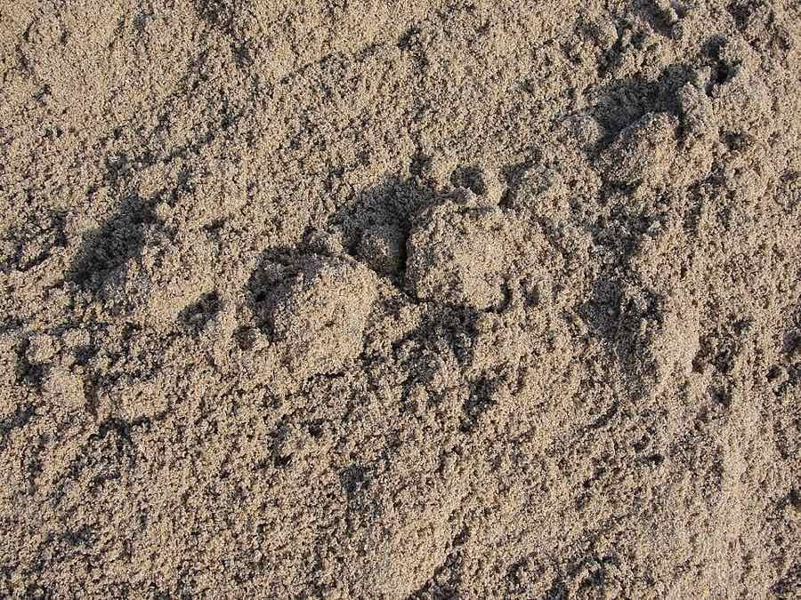
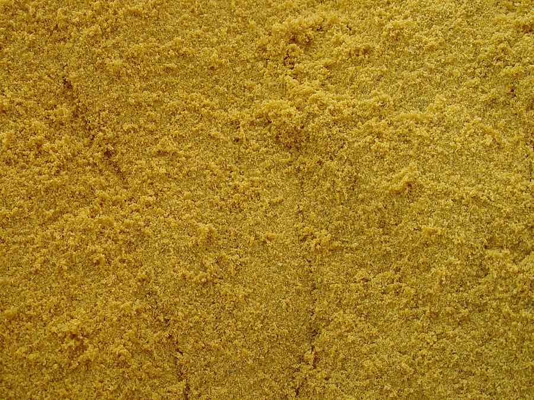

МАТЕРІАЛИ / ПІСОК
Пісок митий і немитий
Головне, що впливає на вибір піску — вміст глини. Він визначає, чи можна використати матеріал у бетоні, чи він годиться лише для підсипки. Пояснюємо різницю, щоб ви не переплачували і не ризикували міцністю конструкції.
Митий і немитий пісок

МИТИЙ ПІСОК
Річковий, промитий
Пісок пройшов промивку, тому вміст глини та мулистих домішок мінімальний. Зерна чисті, без плівки, що забезпечує гарне зчеплення з цементом.
- Вміст глини — до 2%, допустимо для бетону будь-якого класу
- Використання: бетон, штукатурка, стяжка, кладка
- Дорожчий за немитий через витрати на промивку

НЕМИТИЙ ПІСОК
Кар'єрний, природний
Видобувається без додаткової обробки, тому містить природну домішку глини та пилуватих часток — від 5% до 15% залежно від кар'єру.
- Вміст глини — 5–15%, не рекомендований для конструкційного бетону
- Використання: підсипка, планування, засипка траншей
- Дешевший за митий — оптимальний для великих обсягів
ЧОМУ ЦЕ ВАЖЛИВО
Як вміст глини впливає на результат
Глина обволікає піщинки плівкою, яка заважає цементному каменю зчепитися з заповнювачем.
Втрата міцності
Глиниста плівка на зернах піску знижує адгезію з цементом — бетон набирає меншу міцність і швидше тріскається під навантаженням.
Розтріскування
Надлишок глини в піску для штукатурних сумішей провокує усадкові тріщини при висиханні шару.
Коли глина не заважає
Для зворотної засипки траншей чи вирівнювання ділянки вміст глини не критичний — тут доцільніше взяти дешевший немитий пісок.
ХАРАКТЕРИСТИКИ
Пісок: порівняльна таблиця
| Тип піску | Вміст глини | Модуль крупності | Застосування |
|---|---|---|---|
| Річковий митий | до 2% | 1,8–2,5 | Бетон, штукатурка, стяжка |
| Будівельний сіяний | до 3% | 1,5–2,0 | Кладка, універсальні роботи |
| Кар'єрний немитий | 5–15% | 1,0–1,8 | Підсипка, планування, засипка |
НЕ ВПЕВНЕНІ, ЯКИЙ ПІСОК ПОТРІБЕН?
Скажіть тип робіт — підберемо матеріал
Опишіть задачу телефоном, і ми порекомендуємо митий чи немитий пісок та розрахуємо обсяг.
ПИТАННЯ
Про пісок
Чи можна використати немитий пісок для бетону?
Для неконструкційного бетону низьких класів — іноді можна, якщо вміст глини не перевищує 3–5%. Для фундаментів, перекриттів та інших несучих конструкцій рекомендуємо тільки митий пісок з вмістом глини до 2%.
Як перевірити вміст глини самостійно?
Найпростіший спосіб — розмішати жменю піску у прозорій банці з водою і дати відстоятись. Шар мулу й глини осяде зверху окремим шаром — за його товщиною можна орієнтовно оцінити вміст домішок. Точний показник дає лабораторний аналіз, який зазначений у паспорті якості партії.
Яка різниця в ціні між митим і немитим піском?
Митий пісок дорожчий через додатковий етап промивки на кар'єрі, але для конструкційних робіт це виправдана різниця — економія на матеріалі часто обходиться дорожче через ремонт чи переробку.
Який пісок краще для дитячого майданчика чи саду?
Для пісочниць і ландшафтних робіт зазвичай беруть митий річковий пісок — він чистіший, без домішок мулу та сміття.